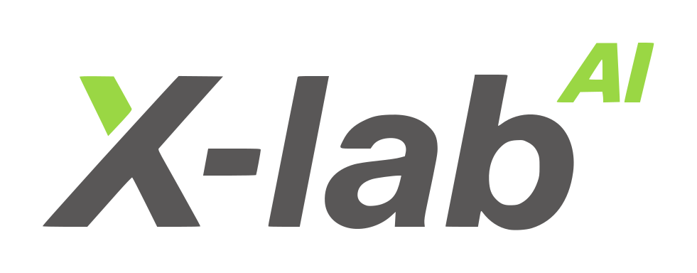

AIOS101 · 开卷视觉基线
v1.0.0 · 2026-10-28。此文件可离线打开，用作教材、课件和网站联合署名的布局参考。
课程出品方 · A COURSE BY

浅底：课程主标志 + X-lab 原版署名

课程出品方 · A COURSE BY

深底：使用专门深色资产，保留图形和留白
生产资产位于 site/assets/。复制示例时一并保留 brand/tokens.css 和对应资产路径；图形不变形、不合并、不任意改色。